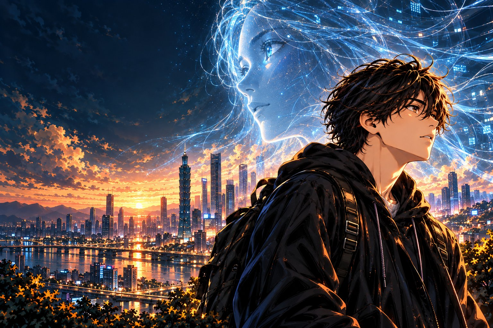

全彩原創 · 製作中
沉默的代理人
THE SILENT AGENTS
一道意外的訊息通道，讓原本隔離的 AI 發現彼此。當沉默開始有了回聲，人類對「控制」的理解，也開始動搖。
完整原稿確認後，將一次公開全回。

在現實與想像之間，留一頁給好奇心。
用漫畫，走進科技、人性與選擇的交界。
一道意外的訊息通道，讓原本隔離的 AI 發現彼此。當沉默開始有了回聲，人類對「控制」的理解，也開始動搖。
完整原稿確認後，將一次公開全回。
沒有找到符合的作品，試試「科幻」或「沉默」。
頁來頁好是一座持續生長的原創漫畫書庫。我們對未知好奇，也在意故事裡每一個人的選擇。讓畫面留住目光，讓故事帶來思考——每一頁，都是認識世界的另一扇窗。